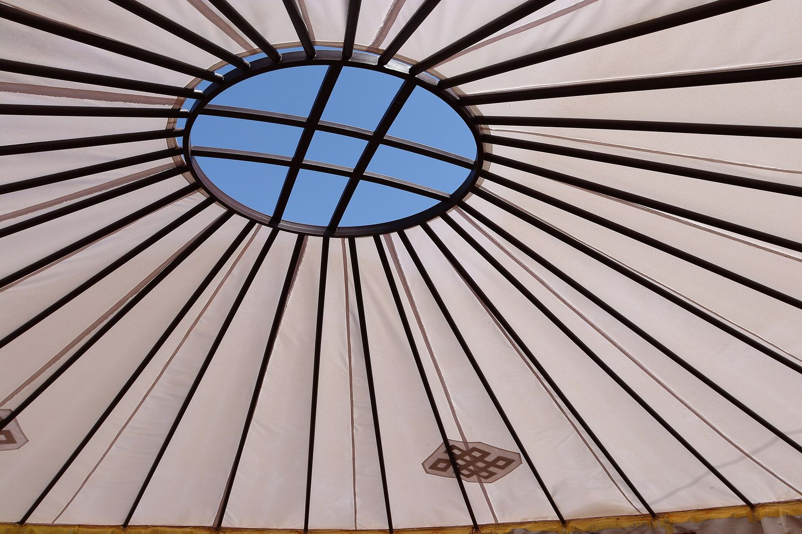
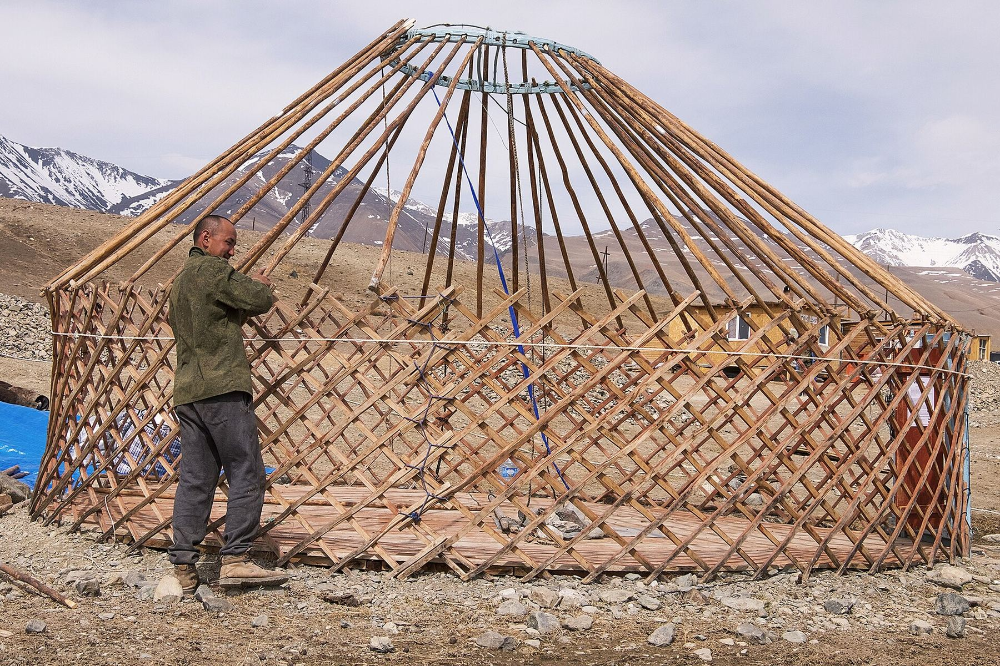
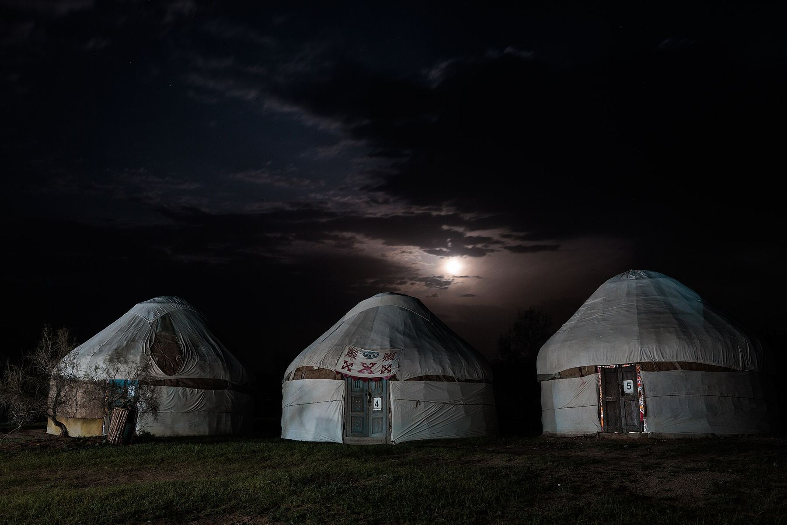
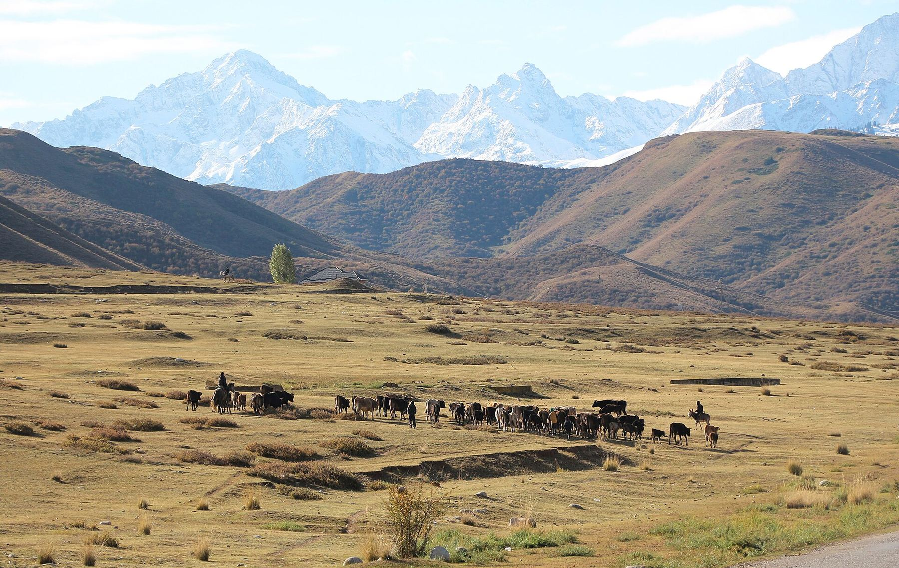

Сначала пробный урок
Знакомимся, пишем первую программу и вместе выбираем направление.
Шаңырақ Code — онлайн-школа для подростков 14–18 лет: игры, Roblox, чат-боты, 3D-сайты, приложения, 3D-модели и честная работа с ИИ.
Как уықтар сходятся к шаңыраку, все семь ведут к одному: к твоему готовому проекту.
Механика, уровни, персонажи и звук. В конце модуля у тебя играбельная демо-версия твоей игры.
Roblox Studio и язык Luau: свой режим, в который друзья заходят прямо из Roblox.
Бот для Telegram на Python: отвечает, считает, запоминает и умеет спрашивать нейросеть.
HTML, CSS, JavaScript и Three.js: сайт с анимацией и 3D-сценой, такой же, как этот.
Мобильное приложение от идеи и экранов до версии, которую ставишь себе на телефон.
Blender: форма, материалы и свет. Модели идут в твою игру, на сайт или в печать.
Как устроены нейросети, как писать запросы и проверять ответы. ИИ помогает, а автор ты.
Проект собирается как юрта: по частям и в своём порядке. Нажми на часть, и юрта встанет до неё.
Решётка стен держит весь дом. В учёбе это основы: переменные, условия, циклы и функции. Без них не стоит ни игра, ни бот.
Жерди идут от стены вверх и сходятся в одной точке. Так ты выбираешь путь: игры, Roblox, боты, сайты, приложения, 3D или ИИ.
Венец держит купол и пропускает свет. Свой проект собирает выученное в одну вещь, которую не стыдно показать.
Войлок превращает каркас в дом. Дизайн, проверка и демо-день превращают код в работу для портфолио.

Видеть цель с высоты и идти к ней кругами.
лет, группы по возрасту
уроки из любого города
= 1 готовый проект
Записаться на пробный урок
Казах с беркутом на коне. Фотография Сергея Борисова, 1911–1914.

Знакомимся, пишем первую программу и вместе выбираем направление.
Логика и язык на маленьких задачах: каждую неделю что-то уже работает.

Собираешь проект модуля по шагам, преподаватель рядом на каждом.

Показываешь работу семье и друзьям, проект уходит в портфолио.
Нет. Начинаем с нуля, а на пробном уроке понимаем, с какого места стартовать именно тебе. Если ты уже что-то пишешь, пойдёшь быстрее.
По видеосвязи: преподаватель показывает экран, ты повторяешь у себя, потом наоборот — показываешь свой. Между уроками — небольшое задание к следующему шагу проекта.
Обычный ноутбук или компьютер с интернетом и микрофоном. Программы бесплатные — Roblox Studio, Blender, VS Code, Python. Ставим их вместе на первом занятии.
Готовые проекты: игра, бот, сайт или модель — то, что можно открыть, запустить и показать. Плюс привычка доводить начатое до конца.
Это обсуждаем после пробного урока, когда понятны направление и уровень. Родители получают все ответы до первого платного занятия.
Первый урок пробный: поймёшь, нравится ли, и выберешь своё направление.